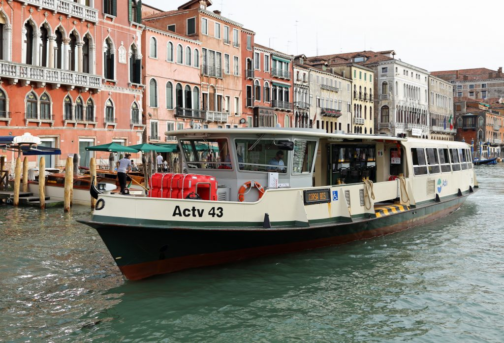
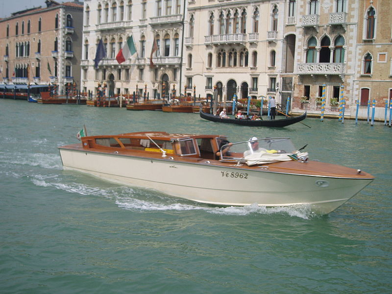
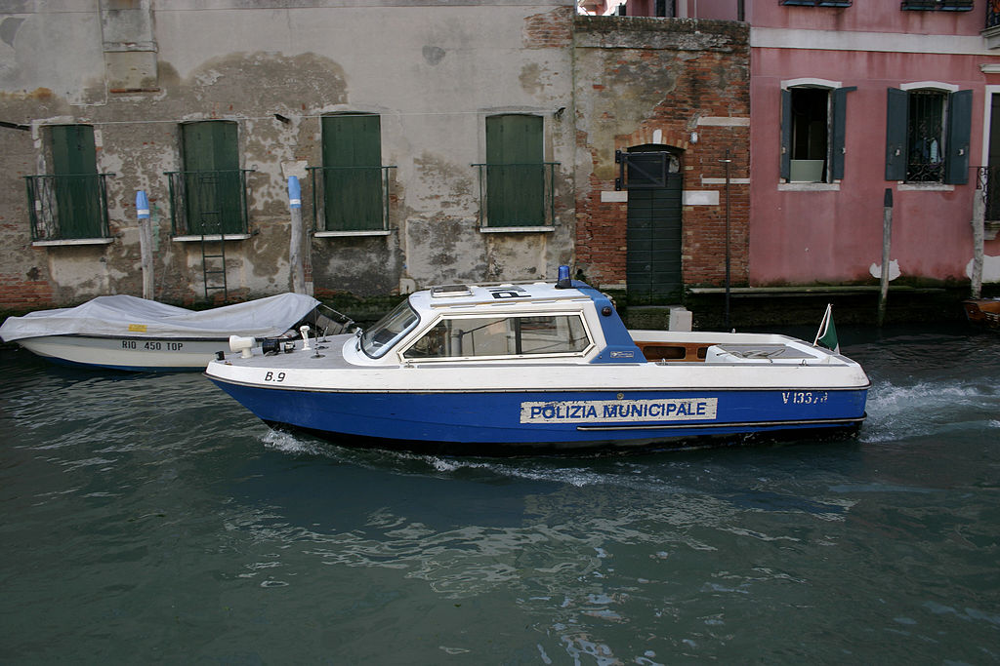
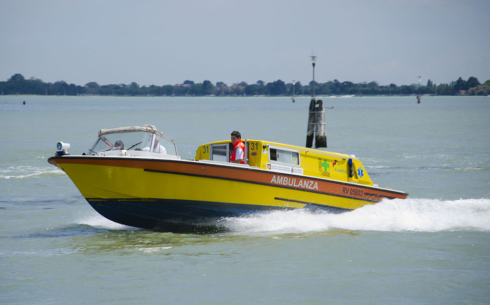
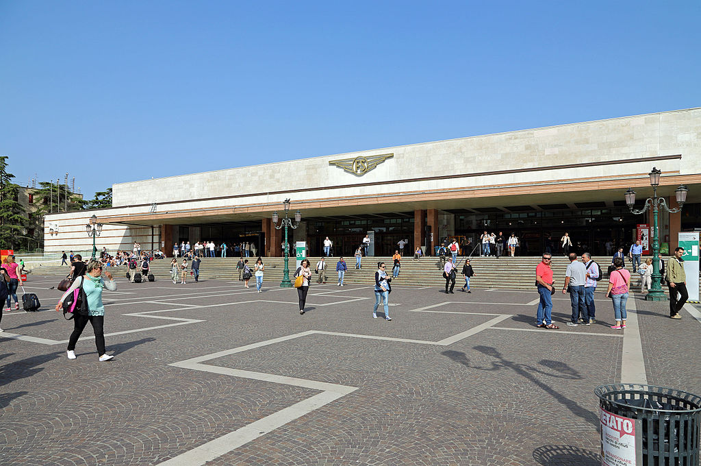
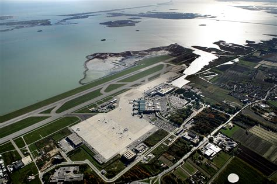

Venise se situant sur la lagune, l'essentiel des voyages quotidiens des habitants se fait par bateau, comme les fameuses gondoles vénitiennes, véritable symbole de la ville, ainsi qu'avec avec les bateaux-bus de la ville, appelés en Italien vaporetti (au pluriel, mais vaporetto au singulier) qui relient les différents quartiers de la ville ainsi que sa région avec les îles de Murano et Burano, et le Lido.
A cela s'ajoute évidemment les embarcations publiques ou privées comme les canots à moteur et le transport commercial. Les différents services de la ville, comme la police et les pompiers, disposent de leurs propres embarcations
Un vaporetto circulant dans Venise
Un bateau taxi
Un bateau de police
Une ambulance
Cependant, d'autres types de transport permettent de rejoindre la terre ferme. Parmi cela, il y a le train, qui a été inauguré avec la construction de la gare Venise-Santa-Lucia, qui sert de terminus aux trains de nuit venant du reste du continent. Venise accueille égalemment un aéroport, celui de Venise - Marco Polo (appelé ainsi car Marco Polo était vénitien). L'aéroport se situe près de la lagune, de façon à ce que les voyageurs empreintent soit un bus, soit un bateau taxi soit un vaporetto pour rejoindre la ville.
La gare de Venise-Santa-Lucia
L'aéroport de Venise - Marco Polo
Pour retourner à la page d'accueil : Ctrl + Entrée